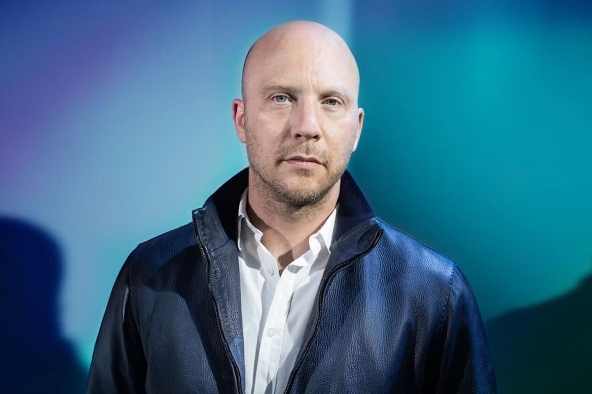

Empowering organizations to drive their AI transformation.
Teams can focus on strategy & change management — we make sure the technology is not the bottleneck and doesn’t push timelines or budget.
A modular stack for enterprise AI.
Complete or one layer at a time.
Integration & Ingestion, as a service
Seamless solutions to complex infrastructure challenges, consumed as a service.
Knowledge Base
One knowledge base for people and agents, open over MCP: use the best of Claude, Copilot and ChatGPT, while the knowledge stays sovereign.
Search & Agents
The complete product: knowledge base, web UI, and agents in Teams and Slack on European infrastructure, enabling to design the workflows that bring most impact.
Secure by design, sovereign by default.
Your knowledge stays yours. EU infrastructure, EU-hosted models, permissions at fact level, and an audit trail you can read.


ISO 27001 certification in progress; our security management system follows the standard today.
-
Hosted in EU
Your knowledge base runs on European infrastructure, and EU-hosted models process your content inside the EU.
-
Flexible deployment
Our EU cloud, your own cloud account in your region, or — on request — your own data centre, on hardware you control.
-
Inference options
EU-hosted models, open-weight models running beside the index, or your own keys on your existing model agreements.
-
No data training
Your data is never used to train models. Guaranteed in writing, in every contract.
Made in Europe, for Europe.
We are a pan-European team of AI Engineers based in Amsterdam and Berlin. recruiting@ascending.ai if you want to get in contact and discuss current job openings. We operate as an ecosystem.
Founder Story
Portrait of graphzero Founder & CEO Lennard Zwart and his ambitions with graphzero (formerly Ascending AI) in Het Financieele Dagblad.
Opens fd.nl in a new tab
Aithos Research Foundation
As part of the graphzero ecosystem we directly benefit from Aithos research on autonomy and pluralism in an age of increasingly powerful AI systems.
Opens aithos.org in a new tab
The Stack AI Hub
Also as part of the graphzero ecosystem we benefit from the network and ecosystem around Amsterdam’s new AI Hub “The Stack”.
Opens thestack.ai in a new tab